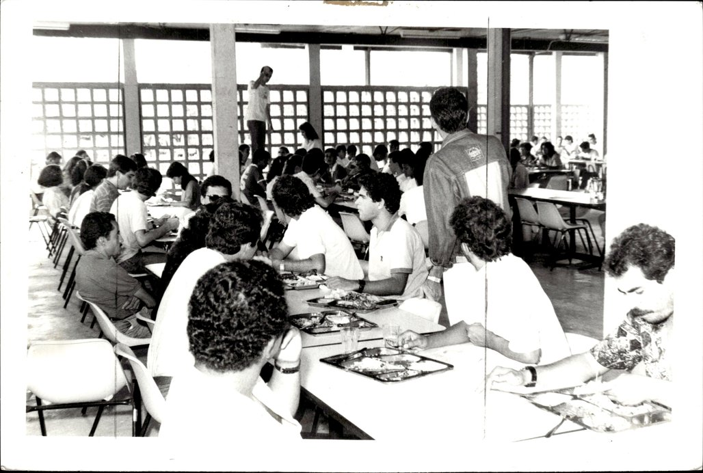

Fundada em 1973 para formar profissionais de saúde em Alagoas, oferece Enfermagem integral com forte inserção em hospitais e unidades de saúde do estado.
Tem pós-graduação e é centro de excelência em assistência, pesquisa e gestão em saúde.

Restaurante universitário e vida estudantil. Acervo UFAL.Prédio do campus nos anos iniciais. Acervo UFAL.